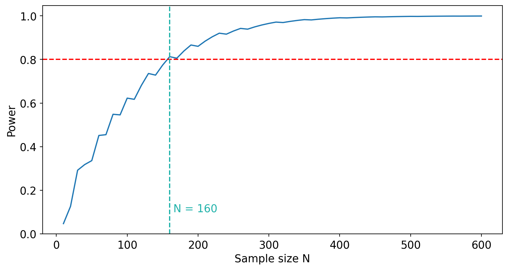

import numpy as np
import pandas as pd
import matplotlib.pyplot as plt
from scipy.stats import binom
from scipy.stats import binomtest
from statsmodels.stats.proportion import proportion_confint
np.random.seed(73)
turquoise = "#20B2AA"
red = "#fb6107"
blue = "#181485"Statistical Test: Key Code
Applied Statistics
1 Binomial distribution
The test statistic \(Q\) counts the number of successes in \(n\) independent Bernoulli trials:
\[Q \sim \text{Binomial}(n, p)\]
Probability mass function \(p_\xi(x) = P(\xi = x)\):
n = 30 # number of trials
p = 0.5 # probability of success under H0
# P(Q = 10), P(Q = 15), etc.
binom.pmf(10, n, p).item()0.02798160072416065binom.pmf(15, n, p).item()0.14446444809436768# Probabilities for all values 1..30
x_grid = np.arange(1, n + 1)
probs = binom.pmf(x_grid, n, p)2 Critical region
We reject \(H_0\) when \(Q \geq C\). The critical value \(C\) is chosen so that \(\text{FPR} = P(Q \geq C \mid H_0) \leq \alpha\).
# FPR for C = 20
crit_reg = x_grid >= 20
probs[crit_reg].sum().item()0.04936857335269457# FPR for C = 19 (too large — exceeds 10%)
crit_reg_19 = x_grid >= 19
probs[crit_reg_19].sum().item()0.10024421103298684Cumulative distribution function \(F_\xi(x) = P(\xi \leq x)\):
binom.cdf(19, 30, 0.5).item()0.9506314266473055# P(Q >= 20) = 1 - P(Q <= 19)
1 - binom.cdf(19, 30, 0.5).item()0.049368573352694513 Quantile
The \(p\)-quantile is the smallest \(x\) such that \(F_\xi(x) \geq p\).
binom.cdf(18, 30, 0.5).item()0.8997557889670134binom.cdf(19, 30, 0.5).item()0.9506314266473055binom.cdf(20, 30, 0.5).item()0.9786130273714662# Direct computation: binom.ppf(p, n, p_success)
int(binom.ppf(0.95, 30, 0.5))194 Custom test function
For any \(n\), \(\mu_0\), and \(\alpha\) the critical value is \(C = u_{1-\alpha} + 1\):
def make_binom_test(n, mu=0.5, alpha=0.05):
q = int(binom.ppf(1 - alpha, n, mu))
return q + 1
print(f"If Q >= {make_binom_test(30, 0.5, 0.05)} → reject H0")If Q >= 20 → reject H0Additional example (\(n = 50\), \(\mu_0 = 0.1\)):
np.random.seed(73)
n = 50
p = 0.1
binom.rvs(n, p, size=3) # generate random observationsarray([6, 5, 5])print(f"If Q >= {make_binom_test(n=50, mu=0.1, alpha=0.05)} → reject H0")If Q >= 10 → reject H05 \(p\)-value
The \(p\)-value is the probability of observing a result at least as extreme as \(q\), assuming \(H_0\) is true.
\[p\text{-value} = P(Q \geq q \mid H_0)\]
def pvalue_binom(n, mu, q):
return 1 - binom.cdf(q - 1, n, mu)# Delivery task: n=30, q=19, H0: mu=0.5
p_val = pvalue_binom(30, 0.5, 19)
suffix = "<= 0.05" if p_val <= 0.05 else ">= 0.05"
print(f"p-value = {round(p_val, 3)} {suffix}")p-value = 0.1 >= 0.05# Additional example: n=50, q=11, H0: mu=0.1
p_val = pvalue_binom(50, 0.1, 11)
suffix = "<= 0.05" if p_val <= 0.05 else ">= 0.05"
print(f"p-value = {round(p_val, 3)} {suffix}")p-value = 0.009 <= 0.055.1 Built-in: scipy.stats.binomtest
# n=30, q=19, H1: mu > 0.5
result = binomtest(k=19, n=30, p=0.5, alternative="greater")
print(f"p-value: {result.pvalue:.4f}")
print(f"95% CI: {result.proportion_ci(confidence_level=0.95)}")p-value: 0.1002
95% CI: ConfidenceInterval(low=0.4669136700770522, high=1.0)# n=50, q=11, H1: mu > 0.1
result2 = binomtest(k=11, n=50, p=0.1, alternative="greater")
print(f"p-value: {result2.pvalue:.4f}")p-value: 0.00946 Two-sided test
When \(H_1: \mu \neq \mu_0\) the rejection region is symmetric (or split into two tails).
6.1 Symmetric distribution (\(\mu_0 = 0.5\))
def pvalue_two_sided_sum(n, q):
binom_h0 = binom.pmf(np.arange(1, n + 1), n, 0.5)
diff = abs(q - 15)
right_sq = 1 - binom_h0[:15 + diff - 1].sum()
left_sq = binom_h0[:15 - diff].sum()
return left_sq + right_sq
pvalue_two_sided_sum(30, 21)np.float64(0.04277394525706737)6.2 Asymmetric distribution (any \(\mu_0\))
def two_sided_test_nonsym(n, mu, alpha):
c2 = int(binom.ppf(1 - alpha / 2, n, mu)) + 1
c1 = int(binom.ppf( alpha / 2, n, mu)) - 1
return c1, c2
two_sided_test_nonsym(30, 0.8, 0.05)(18, 29)def pvalue_two_sided(n, q, mu=0.5):
pvalue_left = binom.cdf(q, n, mu)
pvalue_right = 1 - binom.cdf(q - 1, n, mu)
return 2 * min(pvalue_left, pvalue_right)
pvalue_two_sided(30, 28, mu=0.8)np.float64(0.08835797030399428)7 Power of a statistical test
\[\text{Power} = 1 - \beta = P(Q \in S \mid H_1)\]
def get_stat_power(N, mu_h0, mu_alternative, alpha):
critical_value = int(binom.ppf(1 - alpha, N, mu_h0)) + 1
return 1 - binom.cdf(critical_value - 1, N, mu_alternative)# N=30: low power
get_stat_power(N=30, mu_h0=0.5, mu_alternative=0.6, alpha=0.05)np.float64(0.2914718612234968)# N=300: high power
get_stat_power(N=300, mu_h0=0.5, mu_alternative=0.6, alpha=0.05)np.float64(0.9655326717180746)Power vs. sample size (80 % threshold):
Code
n_grid = np.arange(10, 601, 10)
power = np.array([get_stat_power(N, mu_h0=0.5, mu_alternative=0.6, alpha=0.05) for N in n_grid])
min_n = n_grid[power >= 0.8].min()
fig, ax = plt.subplots(figsize=(10, 5))
ax.plot(n_grid, power)
ax.axhline(0.8, linestyle="--", color="red")
ax.axvline(min_n, linestyle="--", color=turquoise)
ax.text(min_n + 5, 0.1, f"N = {min_n}", color=turquoise, fontsize=13)
ax.set_xlabel("Sample size N", fontsize=13)
ax.set_ylabel("Power", fontsize=13)
ax.tick_params(labelsize=13)
plt.show()
8 Minimum detectable effect (MDE)
def binom_test_mde_one_sided(N, mu0, alpha=0.05, min_power=0.8):
delta_grid = np.linspace(0, 1 - mu0, 500)
power = np.array([get_stat_power(N, mu0, mu0 + d, alpha) for d in delta_grid])
fit_delta = delta_grid[power >= min_power]
return fit_delta[0] if len(fit_delta) > 0 else None
binom_test_mde_one_sided(N=30, mu0=0.5, alpha=0.05, min_power=0.8)np.float64(0.21843687374749496)9 Confidence intervals
A confidence interval is the set of \(\mu_0\) values for which \(H_0: \mu = \mu_0\) is not rejected at level \(\alpha\).
9.1 Two-sided CI (inversion method)
success_cnt = 19
mu_grid = np.arange(0, 1 + 1e-9, 0.001)
mu_no_rej = []
for mu_h0 in mu_grid:
c1, c2 = two_sided_test_nonsym(30, mu_h0, alpha=0.05)
if success_cnt > c1 and success_cnt < c2:
mu_no_rej.append(mu_h0)
print(f"95% CI: {min(mu_no_rej):.3f} -- {max(mu_no_rej):.3f}")95% CI: 0.439 -- 0.800success_cnt = 28
mu_no_rej = []
for mu_h0 in mu_grid:
c1, c2 = two_sided_test_nonsym(30, mu_h0, alpha=0.05)
if success_cnt > c1 and success_cnt < c2:
mu_no_rej.append(mu_h0)
print(f"95% CI: {min(mu_no_rej):.3f} -- {max(mu_no_rej):.3f}")95% CI: 0.780 -- 0.9919.2 One-sided CI
One-sided 95% CI ≡ left bound of two-sided 90% CI:
success_cnt = 22
mu_no_rej = []
for mu_h0 in mu_grid:
c1, c2 = two_sided_test_nonsym(n=30, mu=mu_h0, alpha=0.1)
if success_cnt > c1 and success_cnt < c2:
mu_no_rej.append(mu_h0)
print(f"Two-sided 90% CI: {min(mu_no_rej):.3f} -- {max(mu_no_rej):.3f}")Two-sided 90% CI: 0.571 -- 0.8599.3 Wilson CI (statsmodels)
np.random.seed(111)
N_EXPERIMENTS = 1000
SAMPLE_SIZE = 30
latent_mu = 0.5
fail = 0
for _ in range(N_EXPERIMENTS):
q = binom.rvs(SAMPLE_SIZE, latent_mu)
lo, hi = proportion_confint(q, SAMPLE_SIZE, alpha=0.05, method="wilson")
if not (lo < latent_mu < hi):
fail += 1
print(f"Empirical coverage: {1 - fail / N_EXPERIMENTS:.3f}")Empirical coverage: 0.962